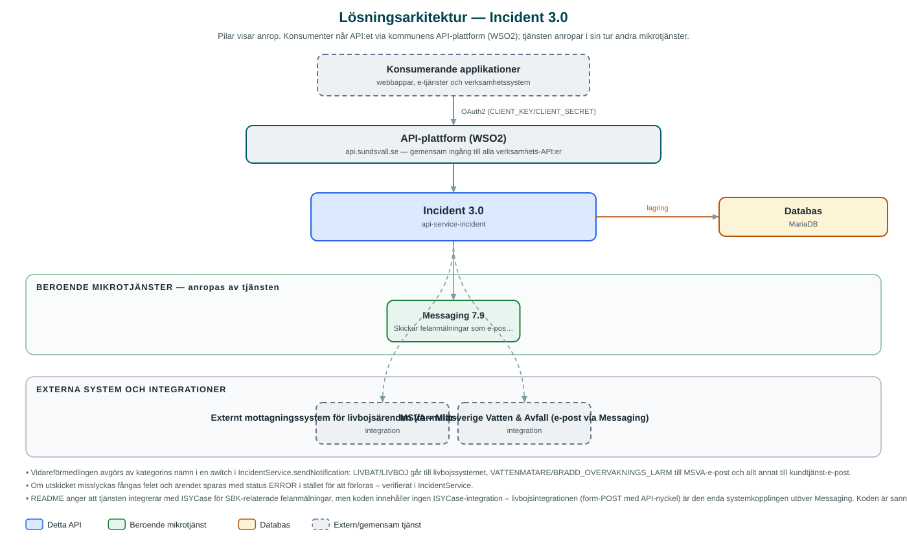

Incident
Tar emot felanmälningar från invånare, lagrar dem och skickar dem vidare till rätt mottagare – ett externt system för livbojsärenden eller e-post till kundtjänst och MSVA.
Om API:et
Incident är kommunens mottagning för felanmälningar från e-tjänster. En inkommen anmälan sparas med kategori, beskrivning, kontaktuppgifter och eventuella bilagor, får ett ärende-id och en status som kan följas upp och uppdateras via API:et. Anmälaren kan även lämna återkoppling på ett ärende.
Vidareförmedlingen styrs av anmälans kategori: ärenden om livbojar och livbåtsbatterier skickas till ett externt mottagningssystem via formulär-POST med API-nyckel, ärenden om vattenmätare och bräddövervakningslarm skickas med särskild e-post till MSVA (Mittsverige Vatten & Avfall), och övriga kategorier skickas som e-post till kundtjänst via Messaging med en HTML-mall.
Kategorierna administreras via API:et och kan filtreras för e-tjänsteplattformen. Statusflödet uppdateras utifrån utfallet – bland annat sätts ärendet till felstatus om utskicket misslyckas, så att inget försvinner tyst.
Det här gör API:et
- Mottagning av felanmälningar – Tar emot och lagrar felanmälningar med kategori, beskrivning, kontaktuppgifter och bilagor.
- Kategoristyrd vidareförmedling – Livbojsärenden går till ett externt system, vattenmätar- och bräddlarmsärenden till MSVA och övriga till kundtjänst via e-post.
- Statusuppföljning – Varje anmälan har en status som kan hämtas och uppdateras, inklusive uppslag via e-tjänstens externa ärende-id.
- Återkoppling – Anmälaren kan lämna feedback på ett ärende i efterhand.
- Kategoriadministration – Kategorier skapas, uppdateras och listas via API:et, med separata listor över giltiga kategorier för e-tjänsteplattformen.
API-dokumentation
API:ets samtliga resurser, parametrar och datamodeller finns beskrivna i en OpenAPI-specifikation som är hämtad ur källkodsförrådet. Den kan utforskas interaktivt i Swagger UI eller laddas ner som YAML.
Teknisk dokumentation
Nedan beskrivs hur tjänsten är uppbyggd, vilka andra tjänster den anropar och vad som krävs för att driftsätta den. Informationen är härledd ur källkoden och dess konfiguration på GitHub.
Arkitektur

API:et är en mikrotjänst (Java 25, Spring Boot via kommunens gemensamma tjänsteplattform dept44 (8.0.8), byggd med Maven). Konsumenter når tjänsten via kommunens gemensamma API-plattform (WSO2) på api.sundsvall.se – tjänsten anropas aldrig direkt. Tjänsten anropar i sin tur andra mikrotjänster i kommunens tjänstelandskap. Lagring: MariaDB med Flyway-migrationer; felanmälningar med status, kategori och bilagor lagras per kommun. Övriga integrationer som förekommer i koden: Externt mottagningssystem för livbojsärenden (formulär-POST med API-nyckel), MSVA – Mittsverige Vatten & Avfall (e-post via Messaging).
Teknikstack
- Språk: Java 25
- Ramverk: Spring Boot via kommunens gemensamma tjänsteplattform dept44 (8.0.8), byggd med Maven
- Databas: MariaDB med Flyway-migrationer; felanmälningar med status, kategori och bilagor lagras per kommun
- Övrigt: Resilience4j (circuit breakers), Feign-klienter, Messaging-modeller genereras vid bygget ur incheckad OpenAPI-specifikation, HTML-mall för e-postutskick
Beroenden till andra mikrotjänster
Tjänsten anropar följande mikrotjänster. Versionerna är hämtade ur källkodens integrationsklienter.
| Tjänst | Version | Användning |
|---|---|---|
| Messaging | 7.9 | Skickar felanmälningar som e-post till kundtjänst och MSVA, med HTML-mall. |
Konfiguration och driftsättning
- application.yml med URL och OAuth2-klientuppgifter för Messaging samt URL och API-nyckel för livbojssystemet
- MariaDB-anslutning; databasschemat versionshanteras med Flyway
- E-postmottagare för kundtjänst och MSVA konfigureras per miljö
- Truststore för certifikatverifiering; municipalityId ingår i alla API-vägar
Noterbart ur källkoden
- Vidareförmedlingen avgörs av kategorins namn i en switch i IncidentService.sendNotification: LIVBAT/LIVBOJ går till livbojssystemet, VATTENMATARE/BRADD_OVERVAKNINGS_LARM till MSVA-e-post och allt annat till kundtjänst-e-post.
- Om utskicket misslyckas fångas felet och ärendet sparas med status ERROR i stället för att förloras – verifierat i IncidentService.
- README anger att tjänsten integrerar med ISYCase för SBK-relaterade felanmälningar, men koden innehåller ingen ISYCase-integration – livbojsintegrationen (form-POST med API-nyckel) är den enda systemkopplingen utöver Messaging. Koden är sanningskällan.
- Messaging-klientens modeller genereras ur en incheckad kopia av Messaging-specifikationen (version 7.9) vid bygget i stället för via integrations-katalogen som i andra tjänster.
Källkod
Källkoden är öppen och finns hos Sundsvalls kommun på GitHub. I källkodsförrådet finns även instruktioner för att klona, konfigurera och starta tjänsten i egen miljö.